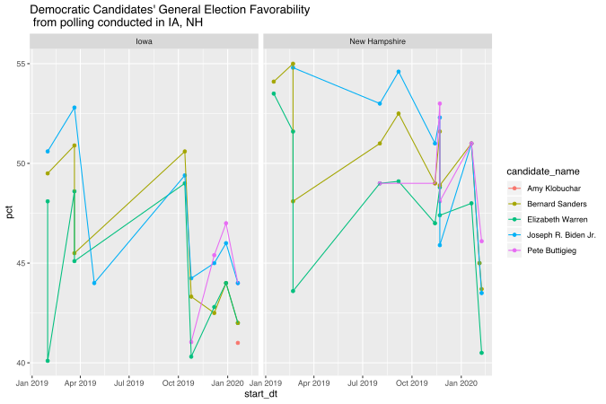
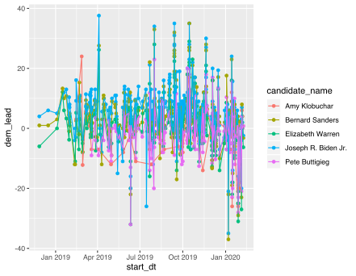
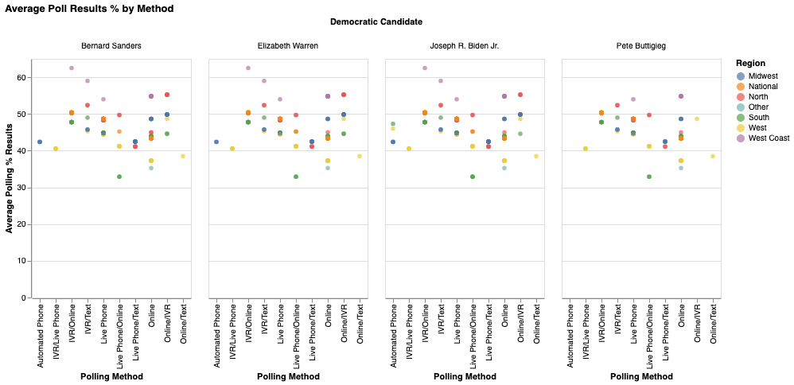
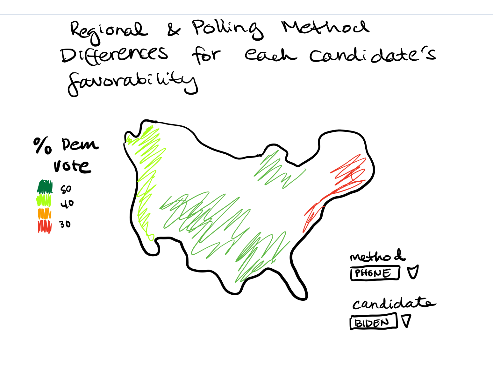
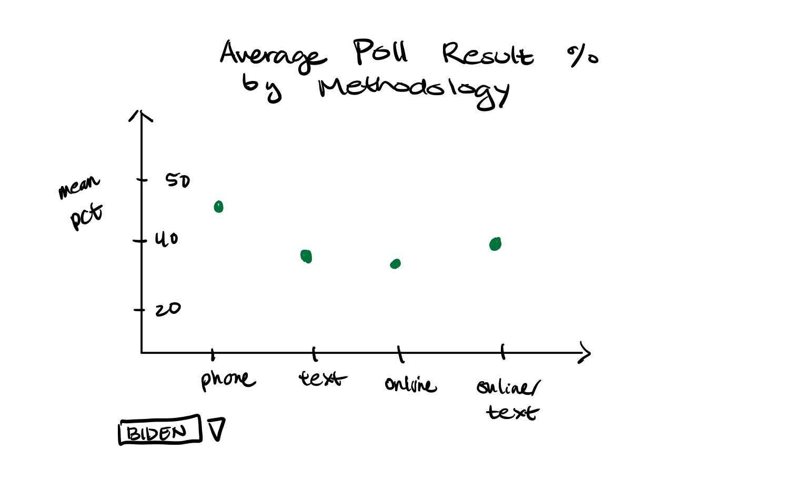
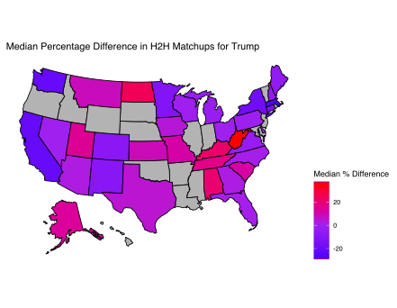

1. Do general election favorability ratings tend to follow primary elections?
This is not an exact comparison, since this data matches Democratic candidates against Trump, but it may inform us if
support for a particular candidate might carry into the general election. For instance, we can look at Iowa and New
Hampshire and people's polling preferences, compared to the known outcomes of the primaries. We know that Iowa finished
with essentially Buttigieg and Sanders tying for first place, and Sanders won New Hampshire with Buttigieg in second.

In general, we see that Democratic candidates have higher favorability %'s in New Hampshire over Iowa. We also see that
Amy Klobuchar and Pete Buttigieg were not polled to respondents as much as the other three candidates, although
Buttigieg does finish in both states with among the highest favorability percentages.
Sketch 2: This map chart would display the difference between January 2020's average % favorability compared to
January 2019's favorability. A negative value means that favorability was higher in 2019, while a positive value
means that favorability was higher in 2020.
 Sketch 3: This barchart would display the % of times that each of the 5 Democratic candidates beat Trump in election
questions in our dataset.
Sketch 3: This barchart would display the % of times that each of the 5 Democratic candidates beat Trump in election
questions in our dataset.

2. Which Democratic candidates are the "most polarizing"?
We can plot the top 5 current Democratic candidates by their polling history in terms of the difference in head-to-head
percentages against Trump.

It looks like Pete Buttigieg and Joe Biden have the highest "variability" in terms of the head-to-head percentage
point differences.
3. How many times are candidates generally polled?
We find that Biden has the highest # of polling questions at 323. Sanders has 296, Elizabeth Warren has 288,
Pete Buttigieg has 174 and Kamala Harris has 150. These candidates have been in the race for the longest (although
Harris has already dropped out), so this is not surprising. Amy Klobuchar, surprisingly, is only mentioned in 34 polling
questions. We assume this is because she didn't have the name recognition of her peers until recently.
4. Do candidates' popularity change by polling methodology?
We know that different candidates have different levels of support from various demographics. Although the polling
dataset does not have data on respondent demographics, it does provide the method that was used to conduct the poll.

We can see that there are some trends in the data, such as all of the candidates seem perform the worst when the poll is conducted via a hybrid of phone and online.
Also, there do seem to be some regional differences by polling method: West Coast IVR/hybrid polls are where Bernie Sanders, Elizabeth Warren, and Joe Biden receive the highest amount of support.
To make this visualization more useful, we could add in interactivity to select a particular region and then compare the methodology trends for each candidate.
Sketch 2:

Sketch 3:

5. Where does Trump do extremely well in terms of voter preferences?
We probably already have some idea, but a visualization can help us in figuring this out:

Sketch 2: This would allow the user to choose the state and Democratic candidate, and then show head-to-head general
election performance over time.
 Sketch 2: This would show, per poll and state, the head-to-head percentage differences of Democratic contenders vs
Trump:
Sketch 2: This would show, per poll and state, the head-to-head percentage differences of Democratic contenders vs
Trump: